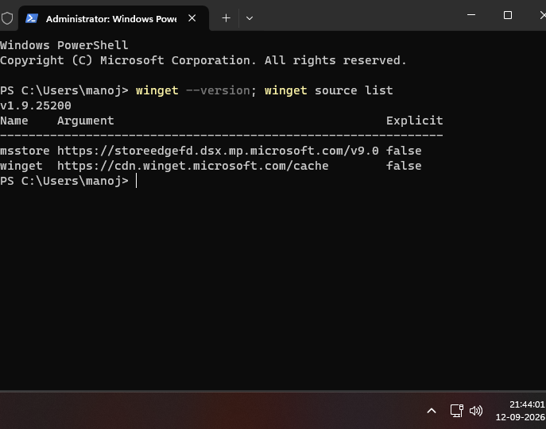

Most application installers require elevated privileges to write to Program Files and register system services.
Method A (Fastest): Press Win + X , then press A (Terminal / PowerShell as Admin).Method B: Press Win + R , type cmd, and press Ctrl + Shift + Enter .Method C: Press the Windows key, search for cmd, right-click Command Prompt , and select Run as administrator .
Note: Windows 10 (version 1709+) and Windows 11 include winget out of the box. No extra software installation is required!
Verify that winget is working properly and inspect which download sources are configured on your system:
winget --version; winget source listCopy

Terminal Output: Winget v1.9.25200 with msstore and winget sources.Verified: 12-09-2026 21:44:01
What this output means:
v1.9.25200: The installed version of Windows Package Manager.msstore: Microsoft Store catalog (connects to storeedgefd.dsx.mp.microsoft.com).winget: The official community repository (connects to cdn.winget.microsoft.com) hosting open-source and desktop Win32 apps.
Before installing, search the repository to find the application's unique Package Id :
winget search chromeCopy
This prints a table with Name , Id (e.g. Google.Chrome), Version , and Source .
Use the package Id to install the program. Using --id ensures you don't accidentally install an unrelated app with a similar name:
winget install --id Google.Chrome -eCopy
Recommended Unattended / Silent Installation: Automatically accept agreements and suppress GUI wizard dialogs:
winget install --id Google.Chrome -e --silent --accept-package-agreements --accept-source-agreementsCopy
Bypass Certificate / MSStore Errors (0x8a15005e): If you see
"Failed when searching source: msstore" , add
-s winget to query only the community winget repository:
winget install --id Google.Chrome -s winget -eCopy
--id <ID>: Unique package identifier (e.g. Google.Chrome).-s winget: Forces the winget source only, bypassing Microsoft Store certificate verification failures.-e: Exact string match for the package ID.--silent: Performs installation in the background without pop-up wizard clicks.--accept-package-agreements: Automatically accepts publisher license terms.
To inspect all programs currently installed on your PC (both via winget and standard MSI/EXE installers):
Filter for a specific app:
winget list Google.ChromeCopy
Check which apps have newer versions available:
Upgrade all outdated software on your computer with a single command:
winget upgrade --all --silent --accept-package-agreements --accept-source-agreementsCopy
Remove any app cleanly using its package ID or exact name:
winget uninstall --id Google.ChromeCopy
Silent / unattended removal:
winget uninstall --id Google.Chrome --silentCopy
Error: Failed when searching source: msstore • 0x8a15005e "An unexpected error occurred while executing the command: 0x8a15005e : The server certificate did not match any of the expected values."
Why this happens: By default, winget checks both the community repository and the Microsoft Store (msstore). When on a corporate proxy/VPN, behind antivirus HTTPS scanning, or when local store certificates are stale, the TLS handshake for msstore fails with error 0x8a15005e.
Fix 1 (Instant): Specify -s winget to bypass msstore
winget install --id Google.Chrome -s wingetCopy
Fix 2: Reset and update winget sources
winget source reset --force && winget source updateCopy
Fix 3: Disable the problematic msstore source permanently
winget source remove msstoreCopy
Fix 4: Direct PowerShell Chrome installer fallback (no winget needed)
$installer = "$env:TEMP\chrome_installer.exe"; Invoke-WebRequest "https://dl.google.com/chrome/install/latest/chrome_installer.exe" -OutFile $installer; Start-Process $installer -ArgumentList "/silent /install" -Wait; Remove-Item $installerCopy
Error: 'winget' is not recognized as an internal or external command
If your Windows machine doesn't have winget installed or enabled yet:
Open the Microsoft Store , search for App Installer , and click Update or Install .
Alternatively, download the latest .msixbundle release from the official GitHub Winget Releases .
Error: 0x80070005 (Access is Denied) / Installer failed with exit code 1603
This indicates insufficient administrative permissions.
Relaunch Terminal or PowerShell by pressing Win + X → Terminal (Admin) .